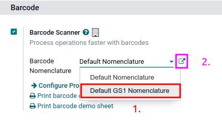

Nomenclatura de código de barras GS1¶
La nomenclatura GS1 consolida varios datos del producto y de la cadena de suministro en un solo código de barras. Odoo utiliza los Números globales de artículos comerciales (GTIN), que compran las empresas para poder hacer envíos y ventas internacionales, y enlistar sus productos dentro de su comercio electrónico.
Configure la nomenclatura GS1 para escanear códigos de barrar de cajas selladas e identificar la información del producto, como el número global de artículos comerciales, el número de lote, la cantidad y más.
Importante
Los números globales de artículos comerciales (GTIN) son la identificación única de un producto que debe comprarse a GS1 para usar los códigos de barras GS1.
Configurar una nomenclatura de código de barras¶
Para usar la simbología GS1 vaya a . En la sección Código de barras y marque la casilla junto a Lector de códigos de barras. Después, seleccione (nomenclatura GS1 predeterminada) en el menú desplegable de la nomenclatura del código de barras.
Para acceder a la lista de reglas GS1 y patrones de código de barras que son compatibles con Odoo de forma predeterminada, haga clic en el icono ➡️ (flecha) que se encuentra del lado derecho de la selección Nomenclatura de código de barras.
En la tabla emergente de Abrir: Nomenclatura puede ver y editar los nombres de reglas disponibles en Odoo. La tabla contiene toda la información que se puede condensar en un código de barras GS1 junto con el Patrón de código de barras correspondiente.
Truco
Después de configurar la nomenclatura del código de barras como GS1, también podrá acceder a la configuración de las a través de un menú oculto que aparece al activar el modo desarrollador. Una vez activado, vaya a y seleccione la Nomenclatura predeterminada GS1.
Uso de los códigos de barras GS1 en Odoo¶
Para identificar productos con los códigos de barras GS1 en Odoo, los negocios obtienen un GTIN único como un identificador internacional distintivo del producto que se compra desde GS1. Este número se combina con detalles específicos del producto que siguen los patrones de código de barras de GS1. El acomodo del patrón del código de barras de los números y letras debe seguir las convenciones de GS1 para que los sistemas internacionales en la cadena de suministro puedan hacer una interpretación adecuada.
Cada código de barras empieza con un identificador de aplicación (A.I.) de 2 a 4 dígitos. Este prefijo obligatorio indica de manera global qué tipo de información incluye el código de barras. Odoo sigue las reglas de GS1 para identificar la información, tal como se menciona en la lista de reglas predeterminadas de GS1. Al incluir el A.I. correspondiente de la lista, Odoo puede interpretar los códigos de barras GS1 de forma correcta. Aunque la mayoría de los patrones de códigos de barras tienen una longitud fija requerida, algunos, como los números de serie y los lotes, tienen una longitud más flexible.
Truco
Para patrones de código de barras de longitud flexible que no se ubican al final de código de barras GS1, utilice el separador FNC1 (\x1D) al final del código de barras.
Por ejemplo: el patrón de código de barra para números de lote es de 20 caracteres de largo. En lugar de crear un número de lote de 20 caracteres, como LOT00000000000000001, use el separador FNC1 para hacerlo más corto: LOT001x1D.
Consulte la lista de nomenclatura GS1 GS1 para ver una lista completa de todos los patrones de código de barras y reglas a seguir. También puede consultar el documento de uso GS1 para ver ejemplos específicos al combinar el GTIN para la información de los productos y configurar el flujo de trabajo.
Creación de reglas¶
Las reglas GS1 son el formato específico de la información dentro del código de barras que comienza con el AI y contiene una longitud definida de caracteres. Al escanear códigos GS1 de la lista predeterminada GS1 se completan automáticamente los datos en la base de datos de Odoo.
Agregar reglas de código de barras GS1 en Odoo, garantiza una correcta interpretación de formatos únicos y no estandarizados GS1.
Para ello, active el modo desarrollador y vaya a la lista Nomenclaturas de código de barras en . Luego, seleccione la opción de la lista Nomenclatura predeterminada GS1.
En la parte inferior de la tabla de la página Nomenclatura GS1 predeterminada seleccione Agregar una línea, esta acción abrirá una ventana para crear una nueva regla. El campo Nombre de la regla se utiliza de forma interna para identificar lo que representa el código de barras. Los tipos de código de barras son las distintas clasificaciones de información que el sistema puede entender (por ejemplo, producto, cantidad, fecha de vencimiento, paquete, cupón). La secuencia representa la prioridad de una regla, es decir, entre más pequeño sea el valor, la regla aparecerá más arriba en la tabla. Odoo sigue la secuencia de esta tabla y utilizará la primera regla que coincida con esta. El patrón de código de barras es lo que permite que el sistema reconozca la secuencia de letras y números que incluye la información sobre el producto.
Después de llenar la infirmación, haga clic en Guardar y crear nuevo para hacer otra regla o haga clic en Guardar y cerrar para guardar y regresar a la tabla de reglas.
Solución de problemas en códigos de barras¶
Es difícil trabajar con códigos de barras GS1, por lo que aquí dejamos algunos puntos que revisar si los códigos de barras no están funcionando como se esperaba:
Asegúrese de que la opción guilabel:
Nomenclatura del código de barrassea menuselection:Default GS1 Nomenclature(nomenclatura GS1 predeterminada). Vaya a la sección de ajustes de nomenclatura para obtener más detalles.Asegúrese de que los campos escaneados en el código de barras estén activados en Odoo. Por ejemplo, para escanear un código de barras que contenga lote y número de serie, asegúrese de que la función Lotes y números de serie está activada en los ajustes de Odoo y en el producto.
Omita puntuación como los paréntesis
()o corchetes[]entre el IA y la secuencia del código de barras. Estos símbolos se usan en ejemplos para facilitar su lectura y no se deben incluir en el código de barras final. Para más detalles sobre cómo crear códigos de barras GS1, vaya a esta sección.Cuando un solo código de barras contiene varios campos codificados, Odoo necesita que todas las reglas estén enlistadas en la nomenclatura de código de barras para poder leer el mismo. En esta sección hablamos sobre cómo agregar nuevas reglas en la nomenclatura de código de barras.
Los códigos de barras de prueba que contienen varios campos codificados, pieza por pieza, para encontrar el campo problemático.
Example
Al probar códigos de barras que contienen un GTIN, un número de lote y una cantidad, comience por escanear solo el GTIN. Luego, pruebe el GTIN con el número de lote y por último, intente escanear todo el código de barras.
Después de diagnosticar el campo codificado desconocido, agregue nuevas reglas a la lista predeterminada de Odoo para reconocer los códigos GS1 con especificaciones únicas.
Importante
Aunque se leerá el campo nuevo, la información no se vinculará a un campo existente dentro de Odoo si no se realiza un desarrollo. De igual forma, es muy útil agregar nuevas reglas para asegurarnos de que el resto del código de barras se interprete correctamente.
Lista de nomenclatura GS1¶
La tabla de abajo contiene la lista de reglas predeterminadas GS1 de Odoo. Los patrones de código de barras se escriben en expresiones regulares y solo las primeras tres reglas requieren de un dígito de control como carácter final.
Nombre de regla |
Tipo |
Patrón de código de barras |
Tipo de contenido GS1 |
Campo dentro de Odoo |
|---|---|---|---|---|
Código Seriado de la Unidad de Envío |
Paquete |
(00)(\d{18}) |
Identificador numérico |
Nombre del paquete |
Código comercial global de artículo (GTIN) |
Unidad de producto |
(01)(\d{14}) |
Identificador numérico |
Campo Código de barras en un formulario de producto |
GTIN de los artículos comerciales contenidos |
Unidad de producto |
(02)(\d{14}) |
Identificador numérico |
Empaquetado |
Enviar a / Entregar a código de país |
Ubicación destino |
(410)(\d{13}) |
Identificador numérico |
Ubicación destino |
Enviar para / Entregar - Reenviar a Número Global de Localización |
Ubicación destino |
(413)(\d{13}) |
Identificador numérico |
Referencia a la entidad de origen |
Identificación de un lugar físico - Número de Localización Global |
Ubicación |
(414)(\d{13}) |
Identificador numérico |
Ubicación |
Lote o número de lote |
Lote |
(10) ([!»%-/0-9:-?A-Z_a-z]{0,20}) |
Nombre alfanumérico |
Lote |
Número de serie |
Lote |
(21) ([!»%-/0-9:-?A-Z_a-z]{0,20}) |
Nombre alfanumérico |
Número de serie |
Fecha de envasado (AAMMDD) |
Fecha de envase |
(13)(\d{6}) |
Fecha |
Pack date |
Fecha de consumo preferente (AAMMDD) |
Consumir preferentemente antes de |
(15)(\d{6}) |
Fecha |
Best before date |
Fecha de vencimiento (AAMMDD) |
Fecha de expiración |
(17)(\d{6}) |
Fecha |
Expiry date |
Conteo de artículos variables |
Cantidad |
(30)(\d{0,8}) |
Medida |
UdM: unidades |
Conteo de artículos comerciales |
Cantidad |
(37)(\d{0,8}) |
Medida |
Cantidad de unidades para contenedores (IA 02) |
Peso neto, kilogramos (kg) |
Cantidad |
(310[0-5])(\d{6}) |
Medida |
Cantidad en kg |
Longitud o primera dimensión, metros (m) |
Cantidad |
(311[0-5])(\d{6}) |
Medida |
Cantidad en m |
Volumen netro, litros (l) |
Cantidad |
(315[0-5])(\d{6}) |
Medida |
Cantidad en l |
Volumen neto, metros cúbicos (m3) |
Cantidad |
(316[0-5])(\d{6}) |
Medida |
Cantidad en m3 |
Longitud o primera dimensión, pulgadas (in) |
Cantidad |
(321[0-5])(\d{6}) |
Medida |
Cantidad en pulgadas |
Peso neto (o volumen), onzas (oz) |
Cantidad |
(357[0-5])(\d{6}) |
Medida |
Cantidad en onzas |
Volumen neto, pies cúbicos (ft3) |
Cantidad |
(365[0-5])(\d{6}) |
Medida |
Cantidad en in ft3 |
Tipo de empaque |
Tipo de empaquetado |
(91) ([!»%-/0-9:-?A-Z_a-z]{0,90}) |
Nombre alfanumérico |
Tipo de paquete |